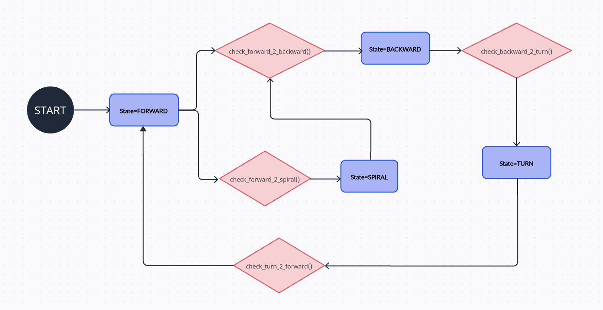
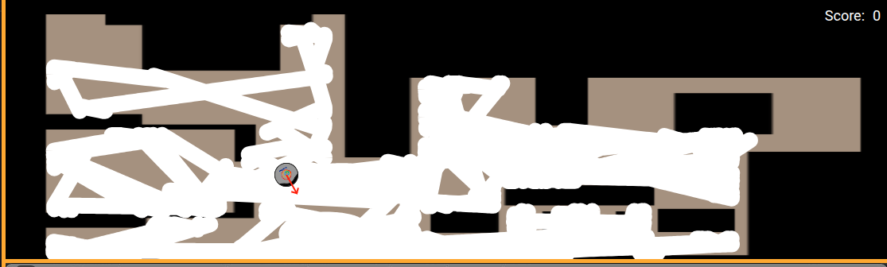

Practice 1 - Vacuum Cleaner
Tests carried out:
The two main tests that I have been carrying out during the practice are:
- Small closed room.
- By default, where the robot appears.
In both tests the robot is able to cover a large part of the area of the house and does not get locked in any corner or place. In the small room, due to the angles, it sometimes takes him a while to get out but he is always able to leave the room and continue with his task throughout the rest of the house.
State diagram:
As for the state machine, I have implemented four states: forward, spiral, backward and turn. The program starts in the forward state. From this state, it can transition to reverse or spiral. If it detects enough space, it will spiral until it detects a collision. It then transitions to the reverse state and, after 0.5 seconds, changes to the spin state. After the spin state, it returns to the initial forward state to repeat the sequence. If it is in the forward state and there isn't enough space to spiral, it will directly transition to reverse upon collision.
Optimal spin
To choose the most optimal rotation method and clean the largest possible surface, I have tried several techniques:
On the one hand, by making it always spin to the right and spin a random value. This method isn't very effective, as it would get stuck in areas of the house where there are obstacles very close together.
Another possible solution is to turn right or left depending on the area where the robot collided. The time it turns to that side is randomly selected. This solution slightly improves the algorithm's efficiency, as even if it turns for a longer or shorter time, it always turns to the correct side to avoid the obstacle it collided with.
Coverage Algorithm - Spiral
Once we've studied how best to turn the robot to avoid obstacles, we can improve the algorithm by adding spirals. When the laser detects obstacles at a distance, instead of continuing straight ahead, it will sweep in a spiral to cover more floor space.
Results and conclusions
After applying all the improvements to the algorithm (such as smarter turning decisions and spiral movements to increase area coverage) the robot's navigation has become significantly more efficient. It now avoids obstacles more effectively, spends less time stuck in corners, and is able to autonomously cover a larger portion of the environment.
This is the result of about 15/20 minutes of execution. As we see, the robot has been able to clean a large part of the house.
